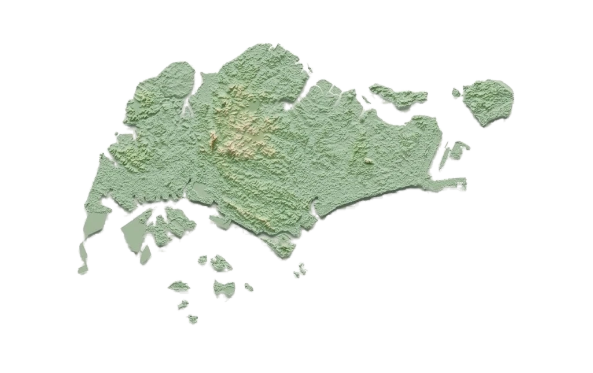

Singapore haze today: Loading
Island view
1 hr PM 2.5 (µg/m³) and 24-hour PSI by region. Colours show NEA PSI, 24-hour.
- Good
- Moderate
- Sensitive groups
- Unhealthy
- Very unhealthy
- Hazardous

Data from data.gov.sg (NEA): 1-hour PM 2.5, 24-hour PSI, and temperature, humidity and wind from weather stations across the island. Feels like is calculated from these, not published by NEA.
What is the PSI?
PSI (Pollutant Standards Index) is Singapore's official 24-hour haze measure from NEA: 0 to 50 is Good, 51 to 100 Moderate, 101 to 200 Unhealthy, 201 to 300 Very unhealthy, and above 300 Hazardous.
What is 1-hour PM2.5?
It shows the fine particles in the air right now, in micrograms per cubic metre. It moves faster than the PSI, so it is the first number to rise when haze arrives. NEA calls it Normal up to 55, Elevated from 56 to 150, High from 151 to 250 and Very High above 250.
What is "Now ≈" under the PSI?
The official PSI is a 24-hour average, so it is slow to rise when haze arrives and slow to clear. "Now ≈" applies NEA's own PSI formula to the latest 1-hour PM2.5 instead. It reacts sooner, but it is an estimate: the official PSI also weighs other pollutants and averages over a full day, so it can differ from NEA's number.
Why does another haze site show a different number?
There are three common reasons. Which region: the island-wide numbers at the top of this page show the highest of the five regions. A site that averages the regions will show a lower number. Which reading: the official 24-hour PSI changes slowly, while "Now ≈" and sites that work from the 1-hour PM 2.5 move sooner. NEA publishes new readings once an hour, so two sites can also sit an hour apart if one has not picked up the newest reading yet. Which scale: the AQI, the PSI and the US EPA AQI are different scales, so their numbers are not meant to match. The "Standard" menu at the bottom lets you switch this page between them.
What is the AQI on this page?
The page opens on NEA's 24-hour PSI. If you pick "AQI" in the Standard menu at the bottom, the headline, colours and panda follow the AQI instead. The AQI is a single score for how clean the air is, from Good (0 to 50) up to Hazardous (above 300). It is worked out from the 1-hour PM 2.5 to match NEA's Haze@SG app: up to 55 µg/m³ it follows the earlier US EPA table, and above that it follows a straight line fitted to the app's readings. The island-wide number is the highest of the five regions, not an average. It is not NEA's PSI, and it is not today's stricter US EPA scale; you can switch the page to the PSI hourly estimate or the current US EPA scale with the "Standard" menu at the bottom, and the page remembers your choice.
Where do the readings come from?
PM2.5, PSI, temperature, humidity and wind come from NEA's open data on data.gov.sg, and the page checks for new readings every 10 minutes while it is open. The island is split into North, South, East, West and Central regions, as NEA reports it. Feels-like temperature is calculated here from those readings and is not published by NEA.